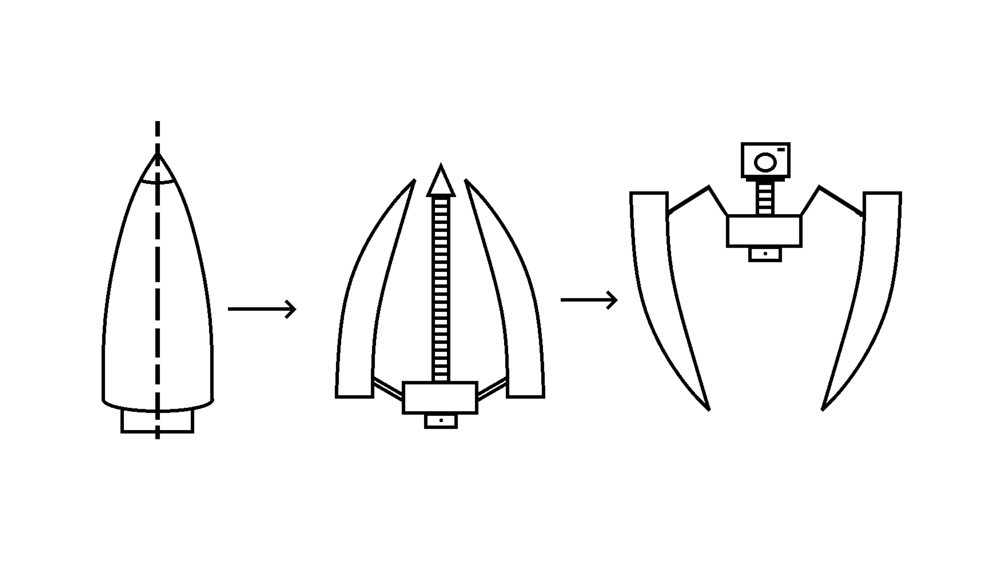

NASA Student Launch Competition
.png)
Design Process
Initialization
As dictated by NASA, the NAU Rocket Club and the Capstone Team were required to contribute to the creation of the Student Launch Proposal document, which was delivered to NASA on September 10th, 2022. The Capstone Team, who were in charge of designing the rocket's payload systems, had to provide an initial outline of what kind of design they were likely to continue to develop. This design outline can be seen below:
Rough Design Outline

These figures outlined how the design would utilize some form of self-correcting mechanism to ensure that the payload and/or the camera would be able to rotate normal to the ground, as outlined within NASA's PayLoad Requirements (see the Project Overview page).
These figures did not go into any specific detail regarding how the design is supposed to work, as these areas would be covered while the Capstone team conducted their Concept Generation and Selection.
Due to the scheduled dates for various NASA Student Launch deliverables, the Capstone Team's contributions to this document became the team's first step in the design process. This deliverable was due about a week after the Capstone Team had officially been formed.
Concept Generation
Concept Generation Overview
The team generated 14 concept variants (CVs) in order to generate a set of potential methods for overcoming the various challenges that the payload system would be required to complete. These designs are available within the gallery (right) along with a brief description of what the proposed designs were intended to do.
The team wanted a healthy mix of passive and active methods in which these designs would utilize in order to rotate the camera system normal to the ground plane. As such, a handful of unorthodox methods were also included within these designs in order to allow the team's mechanical engineers to become aware of alternate methods of vertical alignment.
How these CVs were evaluated and narrowed down into the team's final design can be viewed within the "Concept Evaluation" section (below).

CV01
This design utilizes a motorized leg system to flip the design over just enough for the center of mass to begin rotating the entire system on its own.

CV02
This designs utilizes a set of cylindrical legs to rotate itself normal to the ground. It then uses a scaffolding design to elevate the camera upwards and above any obstacles present on the local terrain.

CV03
This design utilizes a set of latches composes of 3 equal sections of the rocket's nosecone to right itself upward regardless of how it has landed on the ground. The camera system is subsequently above any potential obstacles present on the local terrain.

CV04
This design features a set of cylindrical legs intended to rotate the body section to be normal to the ground.

CV05
This design utilizes a set of 3 to 4 legs to push itself off of the ground should the payload have landed on its side. The Center of Mass is below the legs, ensuring that the camera system is above any obstacles on the local terrain. The legs are operated by use of linear actuators.

CV06
This design utilizes a custom screw system that allows the payload to easily break away from the attached parachute. The subsystem then utilizes a set of 3-4 legs powered by linear actuators to orientate itself normal to the ground. The Center of Mass is below the legs, ensuring that the camera is positioned correctly.

CV07
(Code Name: Spidertron 9000) This design focuses heavily on robotics, utilizing a set of legs composed from 3-4 equal sections of the rocket's nosecone that rotate 180 degrees from their initial positions. This method is completed through the use of a twisting mechanism, ensuring that the camera ends up at the top of the robot.
CV08
This design utilizes a set of 3 to 4 balloons to rotate itself normal to the ground plane. The Center of Mass is located towards the bottom of the payload, ensuring that the camera ends up in the correct location. The design uses a locking mechanism to push out 3 to 4 rectangular platforms to provide stability as the balloons are deflated.
CV09
This design utilizes a single balloon to raise the tip of the rocket nosecone above the ground. Importantly, the balloon does not need to carry the weight of the entire payload system. The Center of Mass will be positioned close to the bottom of the payload system such that the balloon only needs to act as a moment arm to completely align the payload normal to the ground plane.
CV10
This design utilizes a set of thrusters to forcefully push the payload systems normal to the ground plane. This design performed the worst out of all other Concept Variants as this design would have ignited explosive gasses to accomplish this goal.

CV11
This design relies solely on pasive alignment to ensure that the camera is normal to the ground plane. This design utilizes basic physics associated with achieving equilibrium, wherein the Center of Mass is as close to the ground as possible. This results in the spherical system to rotate and come to rest normal to the ground plane.

CV12
This design was inspired based on a 1988 NASA/University Advanced Design Program. The design incorporates a proposed lunar bulk material transport vehicle's method of proper alignment and applies this proposed design onto a deployable platform which can be removed from the payload transport tube through rotating a custom screw such that the platform is pushed out into the local environment.

CV13
This design utilizes a spring in place of a linear actuator to deploy a set of 3 to 4 legs out from the payload system, allowing for the device to be passively rotated normal to the ground plane.
CV14
This design utilizes a set of ball bearings to allow the camera system to passively rotate itself normal to the ground plane. The camera systems and platform are designed in such a way that this platform is acts as a gimbal.
Concept Selection
Concept Selection Overview
As requested by Dr. Carson Pete, the team performed an Analytical Hierarchy Process (AHP) in order to determine what the final design should be. This selection process was utilized due to its allowance of direct comparison of each criterion to develop a weighted eigenvector which would later be applied to the concept variants' scoring, allowing for the creation of a numerical assessment on how well each concept variant meets these criteria.
To make this process easier to follow along with, each step has been numbered in order of completion.
1. Criteria Generation
The criterion used within the AHP is depicted below, accompanied by a brief description of the given criterion. These criteria were generated based on the requirements listed by NASA with regards to what the payload is expected to do as well as a handful of logical parameters with respect to the delivery vehicle. These criteria would later be ranked relative to one another.
| Criterion | Description |
| Location (S-mar effect) |
Describes how the location of the additional weight of the payload will affect the overall stability of the transport vehicle in flight |
| Terrain adaptability |
Describes the variety of terrain the design can adapt to, i.e., flat ground, tall vegetation, etc. |
| Self-righting capability |
Describes the design’s ability to orient itself in the active position required for mission parameters |
| Z-axis Alignment |
Describes the design’s ability to align the camera with the z-axis normal to the ground plane |
| Simplicity of Manufacturing/Design |
Describes the depth that will be required to manufacture/construct the design |
| Simplicity of Operation |
Describes the complexity of each required operation within the design while achieving mission parameters |
| Power consumption |
Describes how much total required power the design requires |
| Cost |
Describes the total cost of the design |
| Weight |
Describes the total weight of the design |
| Required Chute Detachments |
Describes the number of parachutes that the design must detach from |
| Structural Integrity |
Describes the influence of the design on the transport vehicle's integrity |
2. Criteria Comparison
Per the method of the Analytical Hierarchy Process (AHP), the aforementioned criteria were next ranked relative to one another. These criteria were ranked on a scale of 1/9 to 9, where 1 means that the two criteria in question are equally significant with every value being a factor in which the criterion is more important. For instance, a weight of 9 meant that the team felt that the given criterion was 9 times as significant as the criterion it was being compared with, while a score of 1/3 meant that the team felt that the criterion in question was a third as significant as the criterion it was being compared with.
The final relative scores are depicted below. Each criterion listed on the vertical axis was ranked relative to the criteria depicted across the horizontal axis.
3. Normalization of Criteria Comparison
Once the criteria were ranked relative to one another, they were normalized. This was done in order to generate a weighted eigen vector which would be applied onto the ranked concept variants. The normalized criteria rankings are depicted in the image below, with the normalized principle Eigen vector listed to the right of the table.
4. Ranking of Concept Variants
The previously generated Concept Variants (shown under Concept Selection) were next ranked based on how well they met the previously generated design criteria. The "Chute Detachment" criteria was a point of heavy discussion, and was subsequently considered a "grey area." The team ranked each concept variant on a case-by-case basis, ensuring to assess 1. how many cutes the concept variant would need to detach from, 2. how easily the concept variant would be able to detach from these chutes, and 3. how difficult it would be to include a method of parachute detachment.
The team's final rankings for each Concept Variant is listed below.

5. Final Steps
As is required with the Analytical Hierarchy process, The aforementioned concept variant rankings were then normalized. The normalized rankings of these concept variants were required in order to properly compare them with the principle Eigen vector, which was generated in Step 3. Finally, the principle Eigen vector was then multiplied into each concept variant's normalized scores to generate a final assessment of how well each concept variant would meet the team's engineering requirements.
The finalized scores for the concept variants are depicted below. The Preference Rank is on a scale of 1 to 14, with 1 being the first place position for the concept variant's preference score, and 14 being the last place position. The top 6 designs are highlighted in the below image, with credit being given to the individual(s) that came up with the design.
Selecting the Final Design
Final Design Overview
As determined from the Analytical Hierarchy Process, CV14 was deemed to most adequately meet the required design parameters. As described within the above image gallery, this Concept Variant uses a set of ball bearings to allow the camera system to passively rotate itself normal to the ground plane. The camera system and platform are designed in such a way that this platform acts as a gimbal.
The rough CAD model for Concept Variant 14 is depicted to the right. Shown is the proposed method for chute detachment, which utilizes a motor to rotate a threaded rod, allowing for the payload system to be ejected from the rocket body. This system will also include two pairs of ball bearings such that the camera is able to gimbal with 360 degrees of movement.
Preliminary Design Proposal (PDR)
NAU 2022/2023 NASA Student Launch Preliminary Design Review

Click on the Document Cover above to view the team's 2022/2023 Preliminary Design Report!
Preliminary Design Report
As a part of the design process, the team created a Preliminary Design Report (PDR) for the NAU Rocket Club to incorporate into their NASA PDR submission. This report is viewable by clicking on the image to the left, and contains the progress of the design process as of October 2022.
Prototyping
Prototyping Overview
In order to gain experience in assembling the proposed payload design and in order to ensure that the payload design would work as expected, the team generated a prototype of the payload. This prototype's purpose was to identify any unexpected hurtles that would need to be overcome, both in regard to the payload's operation and in regard to the overall assembly process.
The team learned that it may be extremely difficult to apply adhesive material onto the outsides of the ball bearings in many areas. This issue can be rectified through installing the ball bearings as press fits into their respective positions. Interestingly, the deployment system worked exactly as expected, allowing for a reliable method of chute detachment.
Physical Payload Prototype

This prototype allowed the team to gain experience in assembling the payload and assessing possible areas in which the design might struggle, either due to the design itself or due to the employed assembly process.